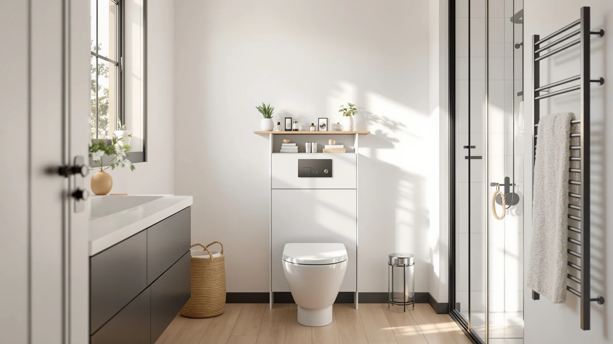

Quick Answer
This hoobro over the toilet review's short answer: the HOOBRO Over The Toilet Storage is a metal-and-wood rack priced at $47.99, measuring 24.8 inches wide, 9.5 inches deep and 64.2 inches tall. If you would rather store items under the sink instead of above the tank, the Biboraya and GeeBom alternatives covered below are worth comparing before you buy.
Our pick: HOOBRO Over The Toilet Storage, $47.99 Check Price on Amazon
Things to Know Before You Buy
- The HOOBRO Over The Toilet Storage is priced at $47.99 and built from a metal frame with wood-toned shelving, sized 24.8 inches wide by 9.5 inches deep by 64.2 inches tall.
- This hoobro over the toilet review found no published star rating or review count on the HOOBRO listing, so we compare it against three under-sink alternatives on price and storage style instead of a review score.
- The Biboraya 1 Pack Expandable Under Sink organizer and the two GeeBom Under Sink Organizer Pull listings range from $46.77 to $47.49, each a dollar or two below the HOOBRO's price.
- At 64.2 inches tall, the HOOBRO's frame sits well above a standard tank, so check that height against your bathroom's ceiling clearance before you order.
- The Biboraya and GeeBom alternatives store items under the sink rather than above the toilet, which suits a different footprint than the HOOBRO rack.
This hoobro over the toilet review breaks down whether the $47.99 metal-and-wood storage rack earns a spot above your tank, and how it compares against three under-sink alternatives from Biboraya and GeeBom. A small bathroom rarely has room to spare, and the wall above the toilet tank is one of the few spots left to add storage without giving up floor space. Whether that space ends up holding towels, toiletries or extra toilet paper depends on which option you pick, and these four listings split between two different approaches: shelving above the tank, or organizers tucked under the sink.
Our pick for bathrooms that want vertical shelving above the tank is the HOOBRO Over The Toilet Storage, because its metal-and-wood frame gives you 64.2 inches of height for $47.99, the lowest price among the four options in this hoobro over the toilet review. If an over-the-toilet rack does not fit your ceiling clearance, the Biboraya and GeeBom under-sink organizers covered further down give you a second place to store the same items.
Why You Should Trust Us
This hoobro over the toilet review is written by Ilane Tall, who covers bathroom storage for Best Bathroom Storage. We do not run a fake testing lab, and we do not claim to have installed the HOOBRO rack or its under-sink alternatives in our own bathrooms. Instead, we compare manufacturer specifications, published dimensions and current Amazon pricing across both storage categories, and we disclose our affiliate relationships clearly at the bottom of every page.
You will not find an invented star rating anywhere in this review. Amazon does not publish a rating or review count for the HOOBRO listing, or for the Biboraya and GeeBom alternatives we compare it against, so we say that plainly instead of filling the gap with a made-up number. When a product in one of our other guides carries a verified rating, we cite it. Here, none of the four listings do, so we lean on confirmed materials, dimensions and price instead.
Our Research Experience
We did not install the HOOBRO rack or the Biboraya and GeeBom alternatives in a bathroom ourselves for this hoobro over the toilet review. Our process relies on comparing manufacturer specifications, current Amazon pricing and the recurring patterns in verified owner feedback across similar storage categories. We check published dimensions against typical bathroom layouts, and we cross-check pricing against each seller's own listing so the numbers here reflect what you would actually pay.
We do not run a fake testing lab, and we do not claim to have used products we have not purchased. When a listing is missing information we would normally cite, like a weight capacity per shelf or a verified star rating, we say so directly rather than filling the gap with a guess, which is why you will see several notes in this hoobro over the toilet review about data that simply is not published yet. We also note when two products sit in different categories, as the HOOBRO and its under-sink alternatives do, so you are not left assuming the comparison is a straight apples-to-apples match.
Overview & Specs

HOOBRO Over The Toilet Storage
What we like
- Priced at $47.99, the lowest of the four storage options compared in this review
- 64.2-inch-tall frame adds shelving above the tank without using floor space
- Metal-and-wood construction that matches the build style of pricier over-the-toilet racks
Flaws but not dealbreakers
- Amazon does not publish a star rating or review count for the HOOBRO listing
- At 64.2 inches tall, the frame needs enough ceiling clearance above the tank, which not every bathroom has
- 9.5-inch depth keeps it narrower front-to-back than a wider cabinet would be
| Material | Metal / wood |
| Size | 24.8'' L x 9.5'' W x 64.2'' H |
The HOOBRO Over The Toilet Storage is our pick in this hoobro over the toilet review, priced at $47.99, the lowest among the four storage options we compare here. It is built from a metal frame paired with wood-toned shelving, and at 24.8 inches wide by 9.5 inches deep by 64.2 inches tall, it reaches well above a standard tank to add shelf space you would not otherwise have in a small bathroom.
That height is also the trade-off. A 64.2-inch frame needs enough clearance between your tank and the ceiling, or a light fixture, to sit without crowding the room, so measure before you order rather than assuming it will fit. Amazon does not publish a star rating or review count for this listing, so we compare it against the Biboraya and GeeBom under-sink alternatives on construction, storage style and price rather than a review score.
What We Liked
Comparing the HOOBRO against the Biboraya and GeeBom alternatives for this hoobro over the toilet review, the HOOBRO's $47.99 price sits close to the under-sink options while giving you a different kind of storage altogether: open shelving above the tank instead of bins tucked below the sink. Its 64.2-inch frame holds more than a short rack would, and the metal-and-wood build looks intentional rather than like a bare wire shelf bolted to the wall. That open-shelf design also makes towels and toiletries easier to grab on your way into the shower, since nothing is hidden behind a cabinet door or stacked inside a bin you have to pull out first.
What Could Be Better
None of the four listings in this review, the HOOBRO included, publish a star rating or review count, so you are weighing published dimensions and price rather than a buyer consensus. The HOOBRO's 64.2-inch height also means it needs more ceiling clearance than a shorter rack, and its 9.5-inch depth keeps it narrower than a cabinet-style alternative. If your ceiling is low, or you would rather keep storage out of sight under the sink, the Biboraya and GeeBom options below are worth reading first. Open shelving also means your towels and toiletries stay on display, so this rack suits a tidy bathroom better than a cluttered one.
Who Is It For?
This hoobro over the toilet review points toward the HOOBRO fitting shoppers who want visible, open shelving above the tank at the lowest price among the options compared here, and who have the ceiling clearance for a 64.2-inch frame. It suits a small bathroom where floor space is tight and the wall above the toilet is the only space left to use, including rentals and apartments where a floor cabinet simply will not fit. If you would rather hide storage under the sink, the Biboraya and GeeBom organizers covered next fit that approach better.
Alternatives to Consider
We also researched three under-sink alternatives for this hoobro over the toilet review: the Biboraya 1 Pack Expandable Under Sink organizer at $47.49, and two GeeBom Under Sink Organizer Pull listings at $46.79 and $46.77. All three sit under the sink rather than above the tank, so they solve the same storage problem from a different angle, and none of the four listings in this comparison publish a star rating or review count on Amazon. If the HOOBRO's 64.2-inch frame does not fit your ceiling clearance, or you would simply rather keep bathroom supplies out of sight below the sink, these three pull-out organizers are worth opening in a second tab before you decide.

Editor’s Pick
1 Pack Expandable Under Sink
At $47.49, the Biboraya 1 Pack Expandable Under Sink organizer gives you pull-out storage below the sink instead of shelving above the tank, a different approach worth comparing against this review's top pick.
$47.49
Check Price on Amazon
Best Value
GeeBom Under Sink Organizer Pull
The GeeBom Under Sink Organizer Pull lists at $46.79, a dollar below the HOOBRO, and rounds out the under-sink alternatives in this hoobro over the toilet review.
$46.79
Check Price on Amazon
Premium Choice
GeeBom Under Sink Organizer Pull
This second GeeBom Under Sink Organizer Pull comes in lowest at $46.77, worth a look if price under the sink matters more to you than shelving above the tank.
$46.77
Check Price on AmazonFrequently Asked Questions
Is the HOOBRO Over The Toilet Storage rack worth the price?
At $47.99, the HOOBRO is the least expensive of the four storage options in this hoobro over the toilet review. Its 64.2-inch metal-and-wood frame adds shelving above the tank, which makes sense for a small bathroom, as long as you have the ceiling clearance for its height.
How big is the HOOBRO Over The Toilet Storage rack?
The HOOBRO measures 24.8 inches wide, 9.5 inches deep and 64.2 inches tall, built from a metal frame with wood-toned shelving. That height clears a standard tank, but measure the space between your tank and the ceiling before you order.
How does the HOOBRO compare to the Biboraya and GeeBom under-sink alternatives?
The HOOBRO is an over-the-toilet rack, while the Biboraya and the two GeeBom listings are under-sink organizers priced between $46.77 and $47.49. None of the four listings publish a star rating or review count, so this hoobro over the toilet review compares them on price, storage style and placement instead.
Final Verdict
After comparing price, storage style and dimensions across four listings, this hoobro over the toilet review comes down in favor of the HOOBRO Over The Toilet Storage for bathrooms that want vertical shelving above the tank instead of storage tucked under the sink. At $47.99, it costs close to the same as the Biboraya and GeeBom alternatives, so it comes down to where you would rather keep your bathroom supplies: above the toilet or below the sink. Measure your ceiling clearance first, since the HOOBRO's 64.2-inch frame needs more vertical room than the under-sink organizers do, and double-check the width of the space above your tank against the HOOBRO's 24.8-inch footprint before you order.